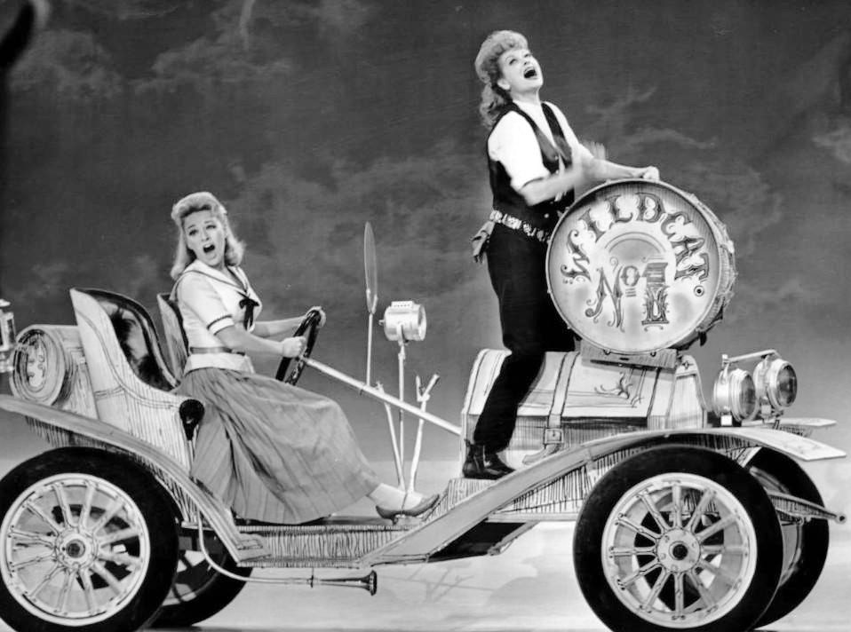

The Jimi Hendrix Experience release Hey Joe
Polydor released Hey Joe, the first single by The Jimi Hendrix Experience, in the UK on December 16, 1966, as Polydor 56139, per the official Jimi Hendrix site.
Backed with Stone Free, it climbed to No. 6 in Britain per Wikipedia, and the clip below is the single, whose story is in our Hey Joe song page.
1969 in 1960s music: the full year guide
Hello, Dolly! premieres in New York
The film of Hello, Dolly!, starring Barbra Streisand with songs by Jerry Herman, had its world premiere at the Rivoli Theatre in New York on December 16, 1969, per the AFI Catalog.
Louis Armstrong appears as the orchestra leader, the film won three Academy Awards including one for its score, and the clip below is Streisand and Armstrong singing the title song.
John Lennon and Yoko Ono fly to Toronto for their peace campaign
John Lennon and Yoko Ono flew to Toronto on December 16, 1969, and stayed at rockabilly singer Ronnie Hawkins' farm in Mississauga, per Billboard Canada.
The visit carried their WAR IS OVER! campaign to Canada and ended with a meeting with Prime Minister Pierre Trudeau in Ottawa on December 23, per the Beatles Bible, and the clip below is Give Peace a Chance.
1968 in 1960s music: the full year guide
Chitty Chitty Bang Bang has its royal premiere in London
Chitty Chitty Bang Bang, starring Dick Van Dyke with songs by Richard M. and Robert B. Sherman, had its royal world premiere at the Odeon Leicester Square on December 16, 1968, per Wikipedia.
The Shermans had written the songs for Mary Poppins four years earlier, and the clip below is Van Dyke singing the title song, posted by Turner Classic Movies.
1967 in 1960s music: the full year guide
The Monkees hold No. 1 on both Billboard charts
The Monkees' Daydream Believer topped the Billboard Hot 100 dated December 16, 1967, its third of four weeks at No. 1, per Wikipedia's list of 1967 number ones.
The same week Pisces, Aquarius, Capricorn & Jones Ltd. was No. 1 on the Billboard album chart, the third of its five weeks on top, and the clip below is Daydream Believer.
The Doors headline a radio Happening in San Bernardino
The Doors headlined the KMEN Happening at the Swing Auditorium in San Bernardino, California, on December 16, 1967, in front of about 5,500 people, per the Doors performance archive.
No recording or film of the show is known, so the clip below is Love Me Two Times from Strange Days, the album they released that autumn.
1966 in 1960s music: the full year guide
The Jimi Hendrix Experience release Hey Joe
Polydor released Hey Joe, the first single by The Jimi Hendrix Experience, in the UK on December 16, 1966, as Polydor 56139, per the official Jimi Hendrix site.
Backed with Stone Free, it climbed to No. 6 in Britain per Wikipedia, and the clip below is the single, whose story is in our Hey Joe song page.
Hendrix makes his TV debut on Ready Steady Go!
The Experience's first television appearance, miming Hey Joe on Rediffusion's Ready Steady Go!, was broadcast on December 16, 1966, per Louder.
The official Hendrix site dates the taping to December 13, the series ended a week later per Rediffusion London, and the clip below is Stone Free, the single's B-side.
The Beatles send fans Pantomime: Everywhere It's Christmas
The Beatles' fourth fan club Christmas record, Pantomime: Everywhere It's Christmas, was sent out on December 16, 1966, as a Lyntone flexi disc, LYN 1145, per Wikipedia and OnThisDay.com.
They made it on November 25 between sessions for Strawberry Fields Forever, with Paul McCartney on piano and comic sketches between the songs, and the clip below is Strawberry Fields Forever.
1965 in 1960s music: the full year guide
Day Tripper and We Can Work It Out reach No. 1 in the UK
The Beatles' double A-side Day Tripper and We Can Work It Out climbed from No. 2 to No. 1 on the UK chart dated December 16, 1965, per the Official Charts Company.
It pushed The Seekers' The Carnival Is Over off the top, and the clip below is Day Tripper.
Granada airs The Music of Lennon & McCartney
Granada Television broadcast its special The Music of Lennon & McCartney in the north of England on December 16, 1965, a day before the rest of the ITV network, per Wikipedia and the Beatles Bible.
Other artists sang the pair's songs, Peter Sellers recited A Hard Day's Night as Richard III, the Beatles mimed both sides of their new single, and the clip below is We Can Work It Out.
Tito Schipa dies in New York
Italian tenor Tito Schipa died in New York on December 16, 1965, per Wikipedia, which cites his New York Daily News obituary.
He created the role of Ruggero in Puccini's La rondine in 1917 and was still teaching voice when he died, and the clip below is his 1930 recording of Tosti's Ideale.
1963 in 1960s music: the full year guide
Columbia releases Miles Davis' Quiet Nights
Columbia released Quiet Nights by Miles Davis on December 16, 1963, per the official Miles Davis site.
It was his last studio project with arranger Gil Evans, recorded mostly in 1962, and the clip below is its bossa nova opener, Corcovado.
1962 in 1960s music: the full year guide
The Beatles play their last Cavern show of 1962
The Beatles played an evening show at the Cavern Club in Liverpool on December 16, 1962, their last there that year, per the Paul McCartney Project.
Two days later they opened their final Hamburg stint at the Star-Club, and the clip below is Love Me Do, their first single, released that October.
1961 in 1960s music: the full year guide
The Beatles play an evening show at the Cavern
The Beatles played an evening show at the Cavern Club in Liverpool on December 16, 1961, per the Paul McCartney Project.
Three days earlier Decca's Mike Smith had seen them there, as told on our December 13 page, and the clip below is My Bonnie, cut in Hamburg with Tony Sheridan.
1960 in 1960s music: the full year guide
Lucille Ball opens on Broadway in Wildcat
Wildcat, a musical with music by Cy Coleman and lyrics by Carolyn Leigh, opened at the Alvin Theatre in New York on December 16, 1960, with Lucille Ball in her only Broadway role, per IBDB and Playbill.
It ran for 171 performances and introduced the song Hey, Look Me Over, a standard of easy listening ever since, and the photo below shows Ball and Paula Stewart singing it on television.

Frequently Asked Questions
When was Hey Joe by Jimi Hendrix released?
Polydor released Hey Joe, the first single by The Jimi Hendrix Experience, in the UK on December 16, 1966. It reached No. 6 on the UK chart.
When did Day Tripper reach No. 1 in the UK?
The Beatles double A-side Day Tripper and We Can Work It Out reached No. 1 on the UK chart dated December 16, 1965.
What was No. 1 on December 16, 1967?
The Monkees' Daydream Believer was No. 1 on the Billboard Hot 100, and their album Pisces, Aquarius, Capricorn & Jones Ltd. topped the album chart.
When did the Hello, Dolly! film premiere?
The film of Hello, Dolly!, starring Barbra Streisand, had its world premiere at the Rivoli Theatre in New York on December 16, 1969.
When did Chitty Chitty Bang Bang premiere?
Chitty Chitty Bang Bang had its royal world premiere at the Odeon Leicester Square in London on December 16, 1968.